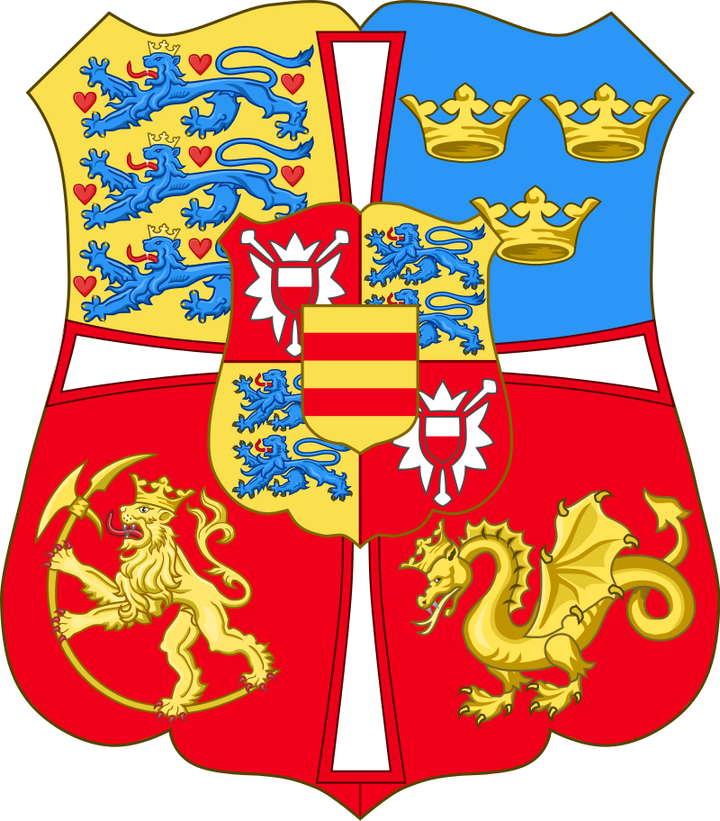

During the 11th and 12th centuries, the centralization
of power had worn down the institutions of the
commonwealth, as the former, notable independence of
local farmers and chieftains gave way to the growing
power of a handful of families and their leaders. The
period from around 1200 to 1262 is generally known as
the Age of the Sturlungs. This refers to Sturla
Þórðarson and his sons, Sighvatr Sturluson, and Snorri
Sturluson, who were one of two main clans fighting for
power over Iceland, causing havoc in a land inhabited
almost entirely by farmers who could ill-afford to
travel far from their farms, across the island to fight
for their leaders.The recorded history of Iceland began
with the settlement by Viking explorers and the people
they enslaved from Western Europe, particularly in
modern-day Norway and the British Isles, in the late
ninth century. Iceland was still uninhabited long after
the rest of Western Europe had been settled. Recorded
settlement has conventionally been dated back to 874,
although archaeological evidence indicates Gaelic monks
from Ireland, known as papar according to sagas, may
have settled Iceland earlier.